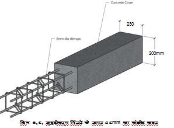
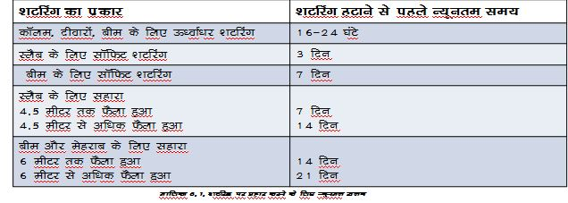

निर्माण निरीक्षण में खराब कारीगरी से संबंधित मुद्दों की पहचान की जानी चाहिए। निर्माण गुणवत्ता के साथ किसी भी तरह के समझौते से बचने के लिए कार्यस्थल पर काम अत्यंत सावधानी से किया जाना चाहिए। यह अनुभाग पारिबद्ध चिनाई के घटकों, नींव कार्य, चिनाई कार्य, फॉर्मवर्क और कास्टिंग करने के लिए चेकलिस्टध्सावधानियांध्सुझाव प्रदान करता है।
नींव
● किसी भवन की नींव जमीन के नीचे भार के स्थानांतरण के लिए जिम्मेदार होती है। आधार का छोटा आकार, अपर्याप्त गहराई, खराबध्कमजोर मिट्टी पर टिका होना, जल भराव क्षेत्र आदि के परिणामस्वरूप इमारत में दरारेंध्धंसाव हो सकता है। कार्यस्थल पर मिट्टी की स्थिति को ध्यान में रखते हुए, नींव का डिजाइन पर्याप्त होना चाहिए।
● चिकनी मिट्टी पर फाउंडेशन लगाने को प्राथमिकता नहीं दी जाती है क्योंकि यह देखा गया है कि जब उस पर भार डाला जाता है तो मिट्टी की संरचना टूट जाती है जिसके परिणामस्वरूप इसकी ताकत कम हो जाती है।
● रेत में दानेदार सामग्री होनी चाहिए, और यह साफ और मिट्टी या जड़ों जैसे किसी अन्य कार्बनिक पदार्थ से मुक्त होनी चाहिए।
● िर्माण स्थल पर नींव के लिए की जाने वाली खुदाई डिजाइन के अनुसार होनी चाहिए और आधार ठीक से समतल होना चाहिए। खोदी गई मिट्टी को समतल करने के लिए उसे वापस खाइयों में न भरें। इसे बेस कंक्रीट से समतल करें।
● जांचें कि सभी चिनाई वाली दीवारों के नीचे नींव निरंतर बनी हुई है।
● एक मंजिला घर के लिए दीवारों के नीचे स्ट्रिप फुटिंग की चौड़ाई कम से कम 750उउ है।
● टाई-कॉलम नींव की चिनाई के साथ-साथ आधार से शुरू होते हैं।
● आरसीसी फुटिंग के स्टील बार के नीचे आवश्यक कंक्रीट कवर प्राप्त करने के लिए स्पेसर प्रदान किए जाते हैं।
● नींव की खाइयां साफ होनी चाहिए और उनकी सतह भी समतल होनी चाहिए।
चिनाई
● कार्य क्षेत्र को साफ करें.
● दीवारों के निर्माण से पहले ईंटों को गीला करना बहुत महत्वपूर्ण है।
● प्रत्येक ईंट की परत पर प्लंब और लेवल की जाँच की जानी चाहिए।
● मोर्टार के अवांछित छींटों की जाँच करें और साफ करें।
● सभी ऊर्ध्वाधर जोड़ और क्षैतिज जोड़ ठीक से संरेखित होने चाहिए।
● चिनाई की तराई सुनिश्चित की जाए।
● जांचें कि पॉइंटिंग, पलस्तर और फिनिशिंग का काम साफ-सुथरा किया गया है।
● जांचें कि दरवाजे और खिड़की के फ्रेम सही जगह पर लगाए गए हैं।
● उन्हें साहुल और समतल होना चाहिए।
● स्तर और एकरूपता के लिए चिनाई जोड़ों की जाँच करें।
● चिनाई के जोड़ों की मोटाई एक समान होनी चाहिए जो 10 से 12उउ से अधिक न हो।
● मोर्टार मिश्रण के अनुपात की जाँच की जानी चाहिए।
● मोर्टार और तराई का पानी साफ होना चाहिए। मोर्टार से जोड़ों की उचित भराई सुनिश्चित की जानी चाहिए।
● सुनिश्चित करें कि एक ही दिन में ईंट चिनाई की ऊंचाई 1.2 मीटर से अधिक नहीं होनी चाहिए।
● प्रत्येक दिन की समाप्ति के बाद आरसीसी और चिनाई कार्य को गीले जूट बैग से ढक दिया जाता है।
● पानी की तराई कम से कम 15 से 20 दिनों तक सुनिश्चित की जानी है।
सीमित करने वाले तत्व
● षटरिंग का उपयोग भवन घटकों को आवश्यक आकार और साइज में ढालने के लिए किया जाता है। षटरिंग को कंक्रीट रखने और संघनन के दौरान पर्याप्त रूप से कठोर और मजबूत रहने के लिए डिजाइन और खड़ा किया गया है।
● यह ऐसा होगा कि कंक्रीट से घोल के रिसाव को रोका जा सके।ऐसा षटरिंग बनाएं जो कठोर, टिकाऊ, पानी प्रतिरोधी और मौसम प्रतिरोधी हो।
● षटरिंग में मजबूत प्रॉप्स, क्षैतिज ब्रेसिंग और रनर होने चाहिए।
● षटरिंग से कचरा, विशेष रूप से लकड़ी के टुकड़े, छीलन और चूरा हटा दें।
● षटरिंग को समतल करें और फॉर्म रिलीजिंग एजेंट को षटरिंग में पेंट करें।
● षटरिंग के आयाम और स्तर सुनिश्चित करें।
● प्लास्टिक टेप का उपयोग करके बोर्डध्प्लेटों के जोड़ों पर अंतराल को सील करें।
● विद्युत चित्र के अनुसार विद्युत नलिकाएँ बिछाएँ। प्लंबिंग ड्राइंग के अनुसार डब्ल्यूसीध्ड्रेन पाइप को स्लैब से गुजारने के लिए स्लैब में प्लास्टिक पाइप (75ध्100उउ व्यास) के टुकड़े लगाएं।
सीमित करने वाले तत्व
● सुदृढीकरण पिंजरे जंग रहित होते हैं और स्पेसर पर उठाए जाते हैं।
● फॉर्मवर्क के आयाम पर्याप्त हैं।
● सुदृढीकरण के लिए उचित आवरण सुनिश्चित करें।
● हनीकॉम्बिंग से बचने के लिए वाइब्रेटर का उपयोग करके कंक्रीट को कॉम्पैक्ट करें। ब्लीडिंग और अलगाव को रोकने के लिए अधिक कॉम्पैक्शनध्कंपन से बचना चाहिए
● कंक्रीट मिश्रण को पानी के साथ मिलाने के 30 मिनट के भीतर इस्तेमाल किया जाता है।
● कंक्रीट को 1200उउ से अधिक ऊंचाई से न फैलाएं या न गिराएं।
● कंक्रीट को यथासंभव अंतिम स्थिति के करीब जमा करें, छोटी मात्रा में वितरित करें।


कंक्रीटिंग के लिए जांच सूची
● सुदृढीकरण पिंजरे जंग रहित होने चाहिए
● सुदृढीकरण के लिए उचित कवर सुनिश्चित करें।
● स्पेसर प्रदान करके बारों को स्पष्ट कवर प्रदान करें।
● सुनिश्चित करें कि फॉर्मवर्क के आयाम चित्र के अनुसार हों।
● कंक्रीट में अतिरिक्त पानी से ताकत कम हो जाती है,
● यह छड़ों में जंग लगने को बढ़ाता है, जिससे रिसाव और नमी हो सकती है।
● हनीकॉम्बिंग से बचने के लिए वाइब्रेटर का उपयोग करके कंक्रीट को कॉम्पैक्ट करें।
● स्राव और पृथक्करण को रोकने के लिए अत्यधिक संघननध्कंपन से बचना चाहिए
● कंक्रीट मिश्रण का उपयोग पानी में मिलाने के 30 मिनट के भीतर किया जाता है
● 1200 मिमी से अधिक ऊंचाई से कंक्रीट को फैलाएं या गिराएं नहीं।
● कंक्रीट को यथासंभव उसकी अंतिम स्थिति के निकट रखें।
● स्लैब और बीम की निचली शटरिंग को 28 दिन से पहले न हटाएं, मौसम और तापमान के आधार पर साइड शटरिंग को पहले हटाया जा सकता है। यदि तापमान 10 डिग्री से कम है तो कुछ दिन अतिरिक्त शटरिंग की अनुमति दें।
● कंक्रीट को हरी अवस्था में या फॉर्मवर्क में रखने के 28 दिनों के भीतर जमने न दें।